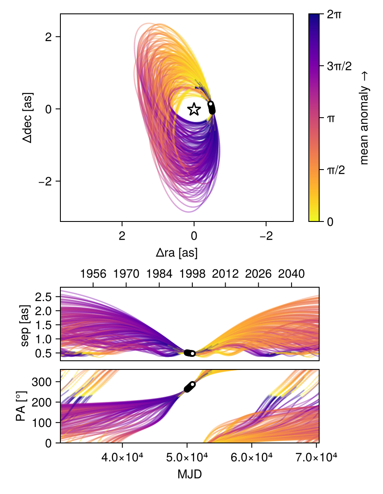
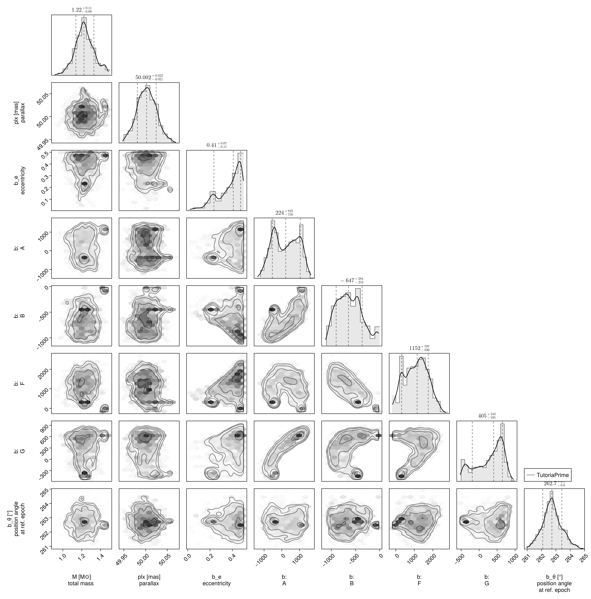

Fit with a Thiele-Innes Basis
This example shows how to fit relative astrometry using a Thiele-Innes orbital basis instead of the traditional Campbell basis used in other tutorials. The Thiele-Innes basis is more suitable then Campbell for fitting low-eccentricity orbits, because it does not have the issues where ω, Ω, and tp become degenerate as eccentricity and/or inclination fall to zero.
At the end, we will convert our results back into the Campbell basis to compare.
using Octofitter
using CairoMakie
using PairPlots
using Distributions
astrom_like = PlanetRelAstromLikelihood(
(epoch = 50000, ra = -505.7637580573554, dec = -66.92982418533026, σ_ra = 10, σ_dec = 10, cor=0),
(epoch = 50120, ra = -502.570356287689, dec = -37.47217527025044, σ_ra = 10, σ_dec = 10, cor=0),
(epoch = 50240, ra = -498.2089148883798, dec = -7.927548139010479, σ_ra = 10, σ_dec = 10, cor=0),
(epoch = 50360, ra = -492.67768482682357, dec = 21.63557115669823, σ_ra = 10, σ_dec = 10, cor=0),
(epoch = 50480, ra = -485.9770335870402, dec = 51.147204404903704, σ_ra = 10, σ_dec = 10, cor=0),
(epoch = 50600, ra = -478.1095526888573, dec = 80.53589069730698, σ_ra = 10, σ_dec = 10, cor=0),
(epoch = 50720, ra = -469.0801731788123, dec = 109.72870493064629, σ_ra = 10, σ_dec = 10, cor=0),
(epoch = 50840, ra = -458.89628893460525, dec = 138.65128697876773, σ_ra = 10, σ_dec = 10, cor=0),
)
@planet b ThieleInnesOrbit begin
e ~ Uniform(0.0, 0.5)
A ~ Normal(0, 10000) # milliarcseconds
B ~ Normal(0, 10000) # milliarcseconds
F ~ Normal(0, 10000) # milliarcseconds
G ~ Normal(0, 10000) # milliarcseconds
θ ~ UniformCircular()
tp = θ_at_epoch_to_tperi(system,b,50000.0) # reference epoch for θ. Choose an MJD date near your data.
end astrom_like
@system TutoriaPrime begin
M ~ truncated(Normal(1.2, 0.1), lower=0.1)
plx ~ truncated(Normal(50.0, 0.02), lower=0.1)
end b
model = Octofitter.LogDensityModel(TutoriaPrime)LogDensityModel for System TutoriaPrime of dimension 9 and 9 epochs with fields .ℓπcallback and .∇ℓπcallback
We now sample from the model as usual:
using Random
Random.seed!(0)
results = octofit(model)Chains MCMC chain (1000×24×1 Array{Float64, 3}):
Iterations = 1:1:1000
Number of chains = 1
Samples per chain = 1000
Wall duration = 7.4 seconds
Compute duration = 7.4 seconds
parameters = M, plx, b_e, b_A, b_B, b_F, b_G, b_θy, b_θx, b_θ, b_tp
internals = n_steps, is_accept, acceptance_rate, hamiltonian_energy, hamiltonian_energy_error, max_hamiltonian_energy_error, tree_depth, numerical_error, step_size, nom_step_size, is_adapt, loglike, logpost, tree_depth, numerical_error
Summary Statistics
parameters mean std mcse ess_bulk ess_tail ⋯
Symbol Float64 Float64 Float64 Float64 Float64 Flo ⋯
M 1.2302 0.1010 0.0110 97.5261 33.9601 1. ⋯
plx 50.0026 0.0218 0.0023 90.2043 167.5656 1. ⋯
b_e 0.3730 0.1100 0.0143 89.1479 353.5398 1. ⋯
b_A 207.4687 702.3163 132.3514 44.1858 275.0909 1. ⋯
b_B -620.8819 259.7666 30.7371 81.8790 25.2277 1. ⋯
b_F 1097.3995 620.8103 128.5197 28.6311 25.1167 1. ⋯
b_G 293.2239 377.3509 116.5397 12.2030 64.9818 1. ⋯
b_θy -0.1297 0.0193 0.0030 50.1882 101.4531 1. ⋯
b_θx -1.0172 0.1216 0.0242 39.5772 22.3204 1. ⋯
b_θ -1.6976 0.0117 0.0005 464.6859 397.1280 1. ⋯
b_tp 16614.4327 32133.0692 7814.4461 23.3649 471.6152 1. ⋯
2 columns omitted
Quantiles
parameters 2.5% 25.0% 50.0% 75.0% 97.5% ⋯
Symbol Float64 Float64 Float64 Float64 Float64 ⋯
M 1.0306 1.1633 1.2241 1.2916 1.4495 ⋯
plx 49.9594 49.9873 50.0024 50.0180 50.0469 ⋯
b_e 0.1098 0.3042 0.4088 0.4644 0.4964 ⋯
b_A -978.1349 -411.7228 223.8146 839.5263 1364.5855 ⋯
b_B -1028.2082 -832.7470 -646.7217 -450.3223 -46.5377 ⋯
b_F -28.8839 625.9447 1152.4719 1566.5693 2248.9267 ⋯
b_G -417.2092 3.5376 404.9202 605.9522 789.1043 ⋯
b_θy -0.1643 -0.1429 -0.1288 -0.1162 -0.0958 ⋯
b_θx -1.2887 -1.0779 -0.9916 -0.9341 -0.8267 ⋯
b_θ -1.7202 -1.7049 -1.6978 -1.6908 -1.6725 ⋯
b_tp -50749.5331 -7698.5671 21011.4595 48612.4874 49797.7929 ⋯
Notice that the fit was very very fast! The Thiele-Innes orbital paramterization is easier to explore than the default Campbell in many cases.
We now display the results:
octoplot(model,results)
octocorner(model, results, small=false)
Conversion back to Campbell Elements
To convert our chain into the more familiar Campbell parameterization, we have to do a few steps. We start by turning the chain table into a an array of orbit objects, and then convert their type:
orbits_ti = Octofitter.construct_elements(results, :b, :) # colon means all rows1000-element Vector{ThieleInnesOrbit{Float64}}:
ThieleInnesOrbit{Float64}(0.49910864509078645, -56311.5436446651, 1.1306552944832746, 50.02310408633696, 1267.066985405433, -616.4956990018923, 1935.049507951454, 758.4875373993132, -37.2339275288808, 21.296711770560186, 109585.25011881597, 0.02094199201953822, 1.729994754420259)
ThieleInnesOrbit{Float64}(0.4975829754266191, -39748.17007884818, 1.1775007510210331, 50.01640389402129, 1439.259801605032, -401.57223364605886, 1515.3394153816937, 891.7693680292095, -30.335630856909354, 24.02009449500255, 93513.09152002003, 0.024541306421850317, 1.7264868449723192)
ThieleInnesOrbit{Float64}(0.49648953801722573, -40277.06712336175, 1.272145429502365, 50.02485045027047, 364.59212563684963, -928.5504489929398, 2107.7625563243364, 358.1436316861909, -38.07659510871765, 4.574844056169705, 91256.90745613453, 0.025148051774058582, 1.723981468271224)
ThieleInnesOrbit{Float64}(0.45085893940773347, -25775.491698935977, 1.3423655409282444, 50.02069902333489, 1220.6638798728127, -397.9577523933408, 1505.6173884391965, 847.658596990135, -30.392745784951867, 19.732061884317318, 79100.08105531558, 0.029013035167972472, 1.62543885068376)
ThieleInnesOrbit{Float64}(0.46217777800846405, -36290.434282428454, 1.376652964156536, 49.98042826321427, 1135.0048277500732, -482.57492579024336, 1773.9825482217936, 891.6815888155576, -35.81023371462572, 17.69790993925044, 89280.31015625135, 0.025704810270382492, 1.6488483664067395)
ThieleInnesOrbit{Float64}(0.44688478842180795, -39812.12198520922, 1.0937996270051018, 50.01422024026399, 442.7051753138723, -772.9793842409733, 1931.64743210822, 636.0879938262507, -36.76700002912486, 3.952030390369958, 91196.21950332477, 0.02516478693904276, 1.617369221239336)
ThieleInnesOrbit{Float64}(0.24358843372947137, 5764.051085799001, 1.2853899431786477, 50.011747188010894, 257.17475202394985, -586.2505062366565, 1288.407639490278, 404.3769904073632, -23.826702367265536, 1.5820135435510656, 45318.04626893149, 0.05064060837549107, 1.282210286161992)
ThieleInnesOrbit{Float64}(0.40131847659532044, -15663.658794219693, 1.1906034631412614, 50.01797836893208, 880.4276931349475, -547.7580458101377, 1468.7272560767258, 609.7185725359809, -27.777050166534227, 13.801905077321292, 68306.52201107482, 0.03359757408048468, 1.5299262514486964)
ThieleInnesOrbit{Float64}(0.40199439818473975, -11580.017570142598, 1.1655375940123422, 50.01879781493015, 804.811076505905, -577.8901051687544, 1415.8283200042192, 581.4649585828373, -26.321851402157787, 12.20047437047752, 63969.417798778115, 0.03587547788329534, 1.5311597813200681)
ThieleInnesOrbit{Float64}(0.43088472977561865, -25168.998965452192, 1.1381670698120039, 49.97901930667873, 592.0665728784159, -727.9042368020994, 1725.2533260055786, 520.8553103584679, -31.828144463008588, 8.079282661267856, 76905.92076992523, 0.029840790025945554, 1.5856312821538143)
⋮
ThieleInnesOrbit{Float64}(0.4379109590632091, 48491.35043203165, 1.2054008938574237, 50.00413605605669, -778.5248643533301, -868.6644439455998, 1035.9946758513688, -202.05509530256302, -14.416517072827329, -17.505619375451488, 47775.32224165893, 0.04803595927284437, 1.599423371702394)
ThieleInnesOrbit{Float64}(0.33128952394406647, 49015.59466848692, 1.1724504703638539, 50.002971588976855, -471.79997174534816, -760.1634530279437, 962.5762044459259, -82.67011888759754, -13.613568462107228, -11.496004647859268, 35960.17980310329, 0.06381874189765024, 1.410968095805407)
ThieleInnesOrbit{Float64}(0.3750731817899807, 4155.369747637458, 1.1221997105571937, 50.01086899224467, 1019.0593374575164, -361.3918419598532, 887.6034881733848, 653.6718098558483, -16.630154566587688, 16.067163058898274, 49117.93207576872, 0.04672292453003127, 1.4833660150626022)
ThieleInnesOrbit{Float64}(0.2588749144740549, 15431.84768711168, 1.254483153290352, 50.02349498131836, 1047.1583881912227, -158.36368411257328, 583.7528887572887, 595.1726002875504, -11.75868753802771, 17.57143206657596, 38865.41376467575, 0.05904821822669434, 1.3033034143201847)
ThieleInnesOrbit{Float64}(0.19505406787278207, 20407.092392207345, 1.3755715059048679, 49.98046657643374, 960.1147980376307, -188.48104059181045, 586.4597618501954, 552.5088171899351, -11.494159061753946, 15.983424162599967, 33684.92824957432, 0.0681293846447883, 1.218457603124005)
ThieleInnesOrbit{Float64}(0.22448192394965116, 13721.533250853281, 1.3027429877487195, 50.03357083241915, 980.7095983458366, -257.16029631824136, 770.6551746660718, 550.8223773093733, -14.85337171429603, 16.516530683634635, 40300.92603089326, 0.05694493053802608, 1.2565513083733364)
ThieleInnesOrbit{Float64}(0.31435766113600444, 7208.837291221491, 1.4204530834936826, 50.00570856659122, 1146.6391949581734, -157.95773079371227, 801.4674828907778, 686.2287404306908, -16.79372321382137, 19.302779301240314, 46867.324484950455, 0.04896659791587354, 1.3845478405270126)
ThieleInnesOrbit{Float64}(0.34045849348284773, 6440.724430503644, 1.3937384731086753, 50.03374131689662, 1129.2040940956158, -183.58462016531752, 825.1576504709188, 705.6980025685081, -17.19172745959674, 18.63999952751882, 47339.181026776714, 0.04847851998430747, 1.4256260400693577)
ThieleInnesOrbit{Float64}(0.17111972413201276, 27343.866836749698, 1.2660658600607466, 49.99008995250372, 840.6255012213251, -161.67523228120925, 404.3073661732741, 533.0504489679981, -7.706737453432395, 13.172402554524954, 26415.333275754536, 0.08687883698040492, 1.1886520538796845)Here is one of those entries:
display(orbits_ti[1])We can now make a table of results (and visualize them in a corner plot) by querying properties of these objects:
table = (;
B_a = semimajoraxis.(orbits_ti),
B_e = eccentricity.(orbits_ti),
B_i = rad2deg.(inclination.(orbits_ti)),
)
pairplot(table)We can also convert the orbit objects into Campbell parameters:
orbits_campbell = Visual{KepOrbit}.(orbits_ti)
orbits_campbell[1]KepOrbit{Float64}
─────────────────────────
a [au ] = 46.7
e = 0.49910865
i [° ] = 66.7
ω [° ] = 300.0
Ω [° ] = 8.68
tp [day] = -56300.0
M [M⊙ ] = 1.13
period [yrs ] : 300.0
mean motion [°/yr] : 1.2
──────────────────────────
plx [mas] = 50.0
distance [pc ] : 20.0
──────────────────────────